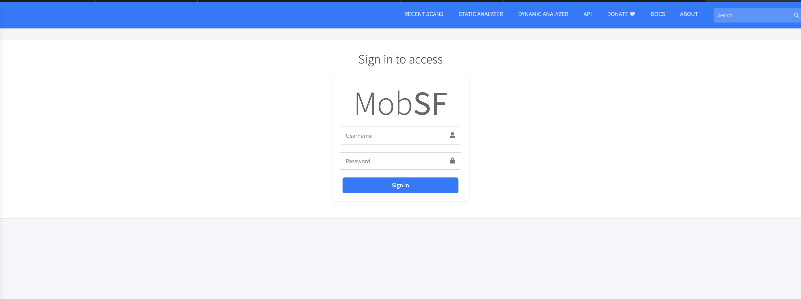
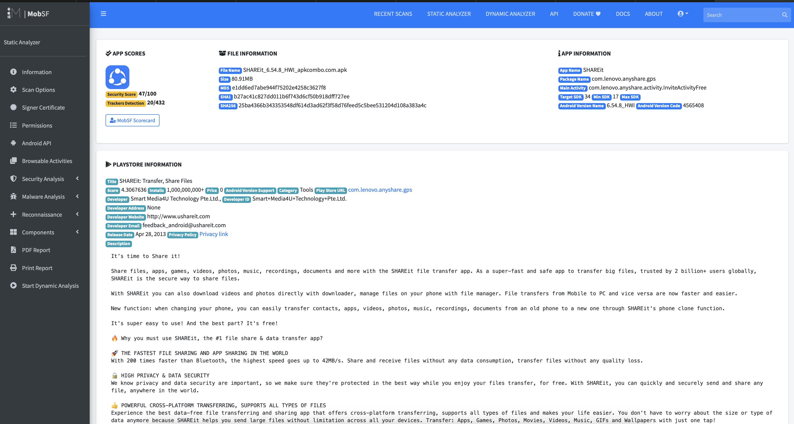
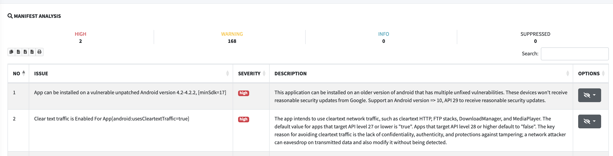

Выполнил команды:
docker pull opensecurity/mobile-security-framework-mobsf:latest
docker run -it --rm -p 8000:8000 opensecurity/mobile-security-framework-mobsf:latest
и перешел по пути http://localhost:8000

Скачал apk для анализа (ShareIt) по ссылке https://apkcombo.com/shareit/com.lenovo.anyshare.gps/download/apk
т.к. при попытке скачать тикток и запустить анализ в MobSF, у меня вылетало по памяти:
Затем загрузил APK ShareIt в MobSF
После чего дождался окончания статического анализа и открыл страницу Static Analysis Report

Статус dangerous:
Разрешение: android.permission.ACCESS_COARSE_LOCATION
Риск: приложение может получать приблизительное местоположение пользователя. Это может привести к нарушению приватности, если геолокация собирается без явной необходимости или без понятного объяснения пользователю.
Митигация: запрашивать разрешение только при наличии функции, которой действительно нужна геолокация; объяснять пользователю цель запроса; использовать разрешение только во время работы соответствующей функции; удалить разрешение из AndroidManifest.xml, если оно не требуется.
Разрешение: android.permission.ACCESS_FINE_LOCATION
Риск: приложение может получать точное местоположение пользователя. Это создаёт повышенный риск утечки чувствительных данных о перемещениях пользователя.
Митигация: запрашивать разрешение только при необходимости; по возможности заменить точную геолокацию на приблизительную; использовать runtime permission только в момент использования функции; явно объяснять пользователю цель сбора геолокации; удалить разрешение, если точное местоположение не требуется.
Разрешение: android.permission.BLUETOOTH_CONNECT
Риск: приложение может подключаться к Bluetooth-устройствам пользователя. Это может привести к несанкционированному взаимодействию с устройствами или раскрытию информации о подключённых устройствах.
Митигация: запрашивать разрешение только при наличии функции обмена данными через Bluetooth; ограничить использование разрешения конкретными сценариями; информировать пользователя о причине запроса; удалить разрешение, если приложение не использует подключение к Bluetooth-устройствам.
Разрешение: android.permission.BLUETOOTH_SCAN
Риск: приложение может сканировать Bluetooth-устройства поблизости. Такие данные могут использоваться для косвенного определения местоположения пользователя или сбора информации об окружающих устройствах.
Митигация: выполнять сканирование только по явному действию пользователя; ограничить время и частоту сканирования; не сохранять лишние данные о найденных устройствах; объяснять пользователю цель запроса; удалить разрешение, если сканирование Bluetooth не требуется.
Разрешение: android.permission.CAMERA
Риск: приложение может получать доступ к камере устройства. При неправильной реализации это может привести к несанкционированной съёмке фото или видео, а также к нарушению приватности пользователя.
Митигация: запрашивать доступ к камере только в момент использования соответствующей функции; явно объяснять пользователю назначение доступа; не использовать камеру в фоновом режиме; ограничить доступ только необходимыми сценариями; удалить разрешение из приложения, если камера не используется.

Раздел MobSF: Network Security
Scope: *
Severity: High
Описание из отчёта: Base config is insecurely configured to permit clear text traffic to all domains.
Обнаруженный недостаток: В базовой сетевой конфигурации приложения разрешена передача данных в открытом виде по HTTP для всех доменов. Это означает, что приложение потенциально может отправлять или получать данные без использования защищённого HTTPS-соединения.
Риск: Передача данных в открытом виде может привести к перехвату трафика злоумышленником, особенно при использовании публичных Wi-Fi-сетей. В результате могут быть раскрыты пользовательские данные, токены сессий, параметры запросов или иная чувствительная информация. Также существует риск модификации сетевого трафика при атаке Man-in-the-Middle.
План митигации:
Необходимо запретить cleartext traffic в production-сборке приложения. Для этого следует настроить networkSecurityConfig и установить запрет на передачу данных по HTTP. Все обращения к backend-сервисам должны выполняться только по HTTPS. Также необходимо проверить код приложения и сторонние SDK на наличие HTTP-адресов и заменить их на HTTPS.
Приоритет исправления: High / Critical
Раздел MobSF: Network Security
Scope: 127.0.0.1
Severity: High
Описание из отчёта: Domain config is insecurely configured to permit clear text traffic to these domains in scope.
Обнаруженный недостаток:
В сетевой конфигурации приложения для домена 127.0.0.1 разрешён cleartext traffic, то есть передача данных без шифрования. Несмотря на то что 127.0.0.1 является локальным адресом, такая настройка всё равно считается небезопасной, если она попадает в production-сборку.
Риск: Разрешение cleartext traffic может указывать на наличие отладочной или тестовой конфигурации в релизной версии приложения. Это повышает риск небезопасного сетевого взаимодействия, неправильной маршрутизации запросов или использования локальных сервисов без шифрования. Также такая настройка может быть использована злоумышленником при эксплуатации уязвимостей, связанных с локальными интерфейсами или WebView.
План митигации:
Необходимо проверить, зачем в конфигурации указан адрес 127.0.0.1. Если он использовался только для разработки или тестирования, его следует удалить из production-конфигурации. Если локальное взаимодействие действительно требуется, нужно ограничить его область применения и убедиться, что оно не используется для передачи чувствительных данных. Также рекомендуется запретить cleartext traffic по умолчанию и явно разрешать только необходимые безопасные исключения.
Приоритет исправления: High

Раздел MobSF: Code Analysis Severity: High Issue: The file or SharedPreference is World Writable. Any App can write to the file. Стандарты: CWE-276: Incorrect Default Permissions; OWASP Top 10 M2: Insecure Data Storage; OWASP MASVS: MSTG-STORAGE-2
Обнаруженный недостаток:
В приложении обнаружено использование файла или SharedPreferences с правами записи для других приложений. Это означает, что стороннее приложение на устройстве потенциально может изменить содержимое такого файла.
Риск:
Если в файле или SharedPreferences хранятся настройки, токены, идентификаторы пользователя, флаги авторизации или другие важные параметры, злоумышленник может изменить эти данные. Это может привести к обходу логики приложения, подмене настроек, нарушению целостности данных или компрометации пользовательской сессии.
План митигации:
Необходимо запретить режимы доступа, позволяющие другим приложениям читать или изменять файлы приложения. Для SharedPreferences следует использовать приватный режим MODE_PRIVATE. Также нужно проверить места хранения чувствительных данных и перенести их в более защищённое хранилище, например Android Keystore или EncryptedSharedPreferences. Если файл не должен изменяться другими приложениями, необходимо ограничить права доступа только текущим приложением.
Приоритет исправления: High
Раздел MobSF: Code Analysis
Severity: High
Issue: Insecure WebView Implementation. WebView ignores SSL Certificate errors and accepts any SSL Certificate. This application is vulnerable to MITM attacks.
Файлы:
com/my/target/x6.java
com/yandex/mobile/ads/impl/q2.java
com/yandex/mobile/ads/impl/v90.java
Стандарты: CWE-295: Improper Certificate Validation; OWASP Top 10 M3: Insecure Communication; OWASP MASVS: MSTG-NETWORK-3
Обнаруженный недостаток: В приложении обнаружена небезопасная реализация WebView, при которой WebView игнорирует ошибки SSL-сертификатов и принимает любой сертификат. Это означает, что приложение может доверять недействительным, самоподписанным или подменённым сертификатам.
Риск: Такая реализация делает приложение уязвимым к атаке Man-in-the-Middle. Злоумышленник может перехватить сетевой трафик, подменить содержимое страницы, получить чувствительные данные пользователя или внедрить вредоносный JavaScript-код в WebView.
План митигации:
Необходимо удалить обработку, которая игнорирует ошибки SSL-сертификатов, например вызовы handler.proceed() внутри onReceivedSslError. При ошибке сертификата приложение должно прерывать соединение с помощью handler.cancel(). Также следует использовать только HTTPS-соединения с корректными сертификатами, проверить настройки сторонних SDK и рекламных библиотек, а для критичных соединений рассмотреть использование certificate pinning.
Приоритет исправления: Critical
Раздел MobSF: Code Analysis Severity: High Issue: The App uses the encryption mode CBC with PKCS5/PKCS7 padding. This configuration is vulnerable to padding oracle attacks. Стандарты: CWE-649: Reliance on Obfuscation or Encryption of Security-Relevant Inputs without Integrity Checking; OWASP Top 10 M5: Insufficient Cryptography; OWASP MASVS: MSTG-CRYPTO-3
Обнаруженный недостаток: В приложении используется режим шифрования CBC с padding PKCS5/PKCS7. Такая криптографическая схема может быть небезопасной, если данные не защищены дополнительной проверкой целостности.
Риск: Использование CBC без корректной проверки целостности может привести к padding oracle attacks. В результате злоумышленник при определённых условиях может получить возможность расшифровывать или модифицировать зашифрованные данные. Это особенно критично, если таким способом защищаются токены, персональные данные, ключи или другая чувствительная информация.
План митигации: Необходимо заменить небезопасную криптографическую схему на современный аутентифицированный режим шифрования, например AES-GCM. Если CBC всё же используется, необходимо обеспечить строгую проверку целостности данных с помощью HMAC по схеме encrypt-then-MAC. Также следует проверить, не используются ли статические IV, захардкоженные ключи или повторное использование ключей.
Приоритет исправления: High
Раздел MobSF: Code Analysis Severity: High Issue: Remote WebView debugging is enabled. Стандарты: CWE-919: Weaknesses in Mobile Applications; OWASP Top 10 M1: Improper Platform Usage; OWASP MASVS: MSTG-RESILIENCE-2
Обнаруженный недостаток: В приложении включена удалённая отладка WebView. Такая настройка может быть полезна при разработке, но не должна присутствовать в production-сборке.
Риск: Если WebView debugging включён в релизной версии, злоумышленник при наличии доступа к устройству или отладочной среде может анализировать содержимое WebView, просматривать DOM, JavaScript, сетевые запросы и потенциально получать чувствительные данные. Это повышает риск исследования внутренней логики приложения и эксплуатации других уязвимостей.
План митигации:
Необходимо отключить WebView debugging в production-сборке. Вызов WebView.setWebContentsDebuggingEnabled(true) должен использоваться только в debug-сборках. Следует добавить проверку типа сборки, например через BuildConfig.DEBUG, и убедиться, что в release-сборке значение всегда равно false.
Приоритет исправления: High
Раздел MobSF: Code Analysis
Severity: High
Issue: Debug configuration enabled. Production builds must not be debuggable.
Файл: com/bumptech/glide/integration/webp/BuildConfig.java
Стандарты: CWE-919: Weaknesses in Mobile Applications; OWASP Top 10 M1: Improper Platform Usage; OWASP MASVS: MSTG-RESILIENCE-2
Обнаруженный недостаток: В коде приложения обнаружена включённая debug-конфигурация. Production-сборки мобильного приложения не должны быть отладочными.
Риск: Включённая отладочная конфигурация может упростить анализ приложения злоумышленником, облегчить reverse engineering, получение логов, исследование внутренней логики и поиск дополнительных уязвимостей. Если отладочный режим включён в релизной сборке, это снижает защищённость приложения.
План митигации:
Необходимо убедиться, что production-сборка собирается с отключённым debug-режимом. В AndroidManifest.xml параметр android:debuggable должен быть установлен в false или отсутствовать для release-сборки. Также нужно проверить настройки Gradle, build variants и сторонние библиотеки, чтобы debug-конфигурация не попадала в финальный APK.
Приоритет исправления: High
| № | Раздел MobSF | Обнаруженная проблема | Severity / статус | Риск | План митигации | Приоритет |
|---|---|---|---|---|---|---|
| 1 | App Permissions | android.permission.ACCESS_COARSE_LOCATION |
dangerous | Приложение может получать приблизительное местоположение пользователя, что создаёт риск нарушения приватности. | Проверить необходимость разрешения. Если не используется — удалить из AndroidManifest.xml. Если требуется — запрашивать только в момент использования функции. |
Medium |
| 2 | App Permissions | android.permission.ACCESS_FINE_LOCATION |
dangerous | Приложение может получать точное местоположение пользователя, что может привести к раскрытию данных о перемещениях. | По возможности заменить на ACCESS_COARSE_LOCATION. Запрашивать только при необходимости и не собирать геолокацию в фоне без причины. |
High |
| 3 | App Permissions | android.permission.BLUETOOTH_CONNECT |
dangerous | Приложение может подключаться к Bluetooth-устройствам пользователя. | Использовать только для функций обмена данными через Bluetooth. Если функция не нужна — удалить разрешение. | Medium |
| 4 | App Permissions | android.permission.BLUETOOTH_SCAN |
dangerous | Приложение может сканировать Bluetooth-устройства рядом с пользователем, что может раскрывать информацию об окружении. | Ограничить сканирование по времени и запускать только по действию пользователя. Не хранить лишние данные о найденных устройствах. | Medium |
| 5 | App Permissions | android.permission.CAMERA |
dangerous | Приложение может получать доступ к камере устройства, что создаёт риск нарушения приватности. | Запрашивать доступ только при использовании функции камеры. Исключить использование камеры в фоне. | High |
| 6 | Network Security | Base config permits clear text traffic to all domains | High | Данные могут передаваться по HTTP без шифрования, что создаёт риск перехвата и MITM-атак. | Запретить cleartext traffic в production. Использовать только HTTPS. Проверить код и SDK на наличие HTTP-ссылок. | Critical |
| 7 | Network Security | Domain config permits clear text traffic to 127.0.0.1 |
High | В production-сборку могла попасть тестовая или отладочная сетевая конфигурация. | Проверить необходимость 127.0.0.1. Если это тестовая настройка — удалить. Запретить cleartext traffic по умолчанию. |
High |
| 8 | Code Analysis | File or SharedPreferences is World Writable |
High | Другое приложение может изменить файл или настройки приложения, что может привести к подмене данных. | Использовать MODE_PRIVATE. Чувствительные данные хранить через EncryptedSharedPreferences или Android Keystore. |
High |
| 9 | Code Analysis | Insecure WebView Implementation: WebView accepts any SSL certificate | High | Приложение уязвимо к MITM-атакам из-за игнорирования ошибок SSL-сертификатов. | Удалить handler.proceed() при SSL-ошибках. Использовать handler.cancel(). Обновить небезопасные SDK. |
Critical |
| 10 | Code Analysis | CBC encryption with PKCS5/PKCS7 padding | High | Возможны padding oracle attacks при неправильной реализации шифрования. | Заменить на AES-GCM. Если CBC остаётся — добавить контроль целостности через HMAC. | High |
| 11 | Code Analysis | Remote WebView debugging is enabled | High | Злоумышленник может анализировать WebView, DOM, JavaScript и сетевые запросы приложения. | Отключить WebView.setWebContentsDebuggingEnabled(true) в release-сборке. Включать только при BuildConfig.DEBUG. |
High |
| 12 | Code Analysis | Debug configuration enabled | High | Отладочные настройки в production упрощают reverse engineering и анализ приложения. | Убедиться, что android:debuggable=false в release-сборке. Проверить Gradle build variants и настройки сборки. |
High |
По результатам SAST-анализа MobSF в приложении обнаружены риски, связанные с опасными разрешениями, небезопасной сетевой конфигурацией, передачей данных без шифрования, небезопасной реализацией WebView, отладочными настройками и небезопасным хранением данных.
Основные меры митигации: запретить cleartext traffic, использовать HTTPS, исправить обработку SSL-ошибок в WebView, отключить debug-настройки в production, ограничить dangerous permissions и использовать безопасное хранение данных.